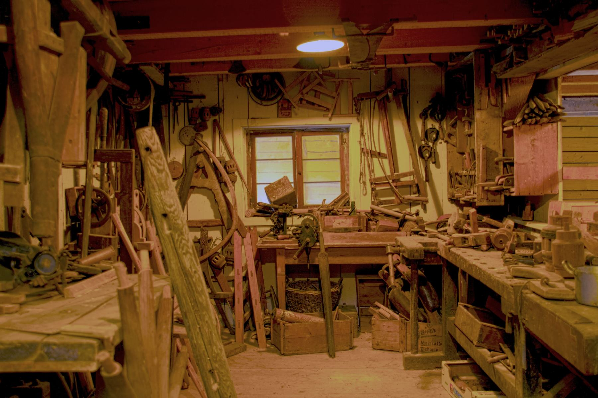
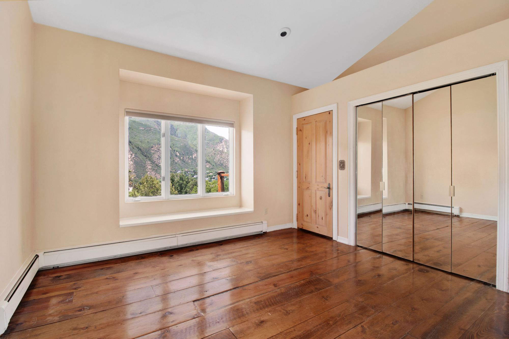
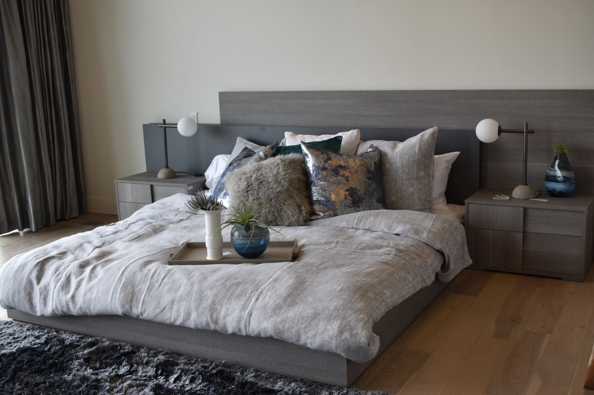
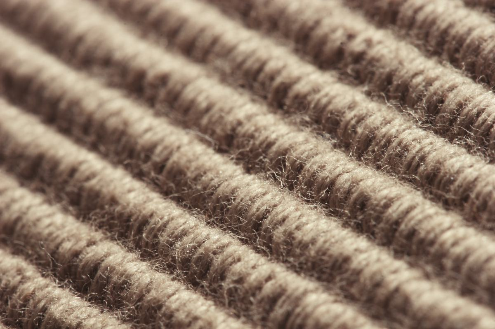
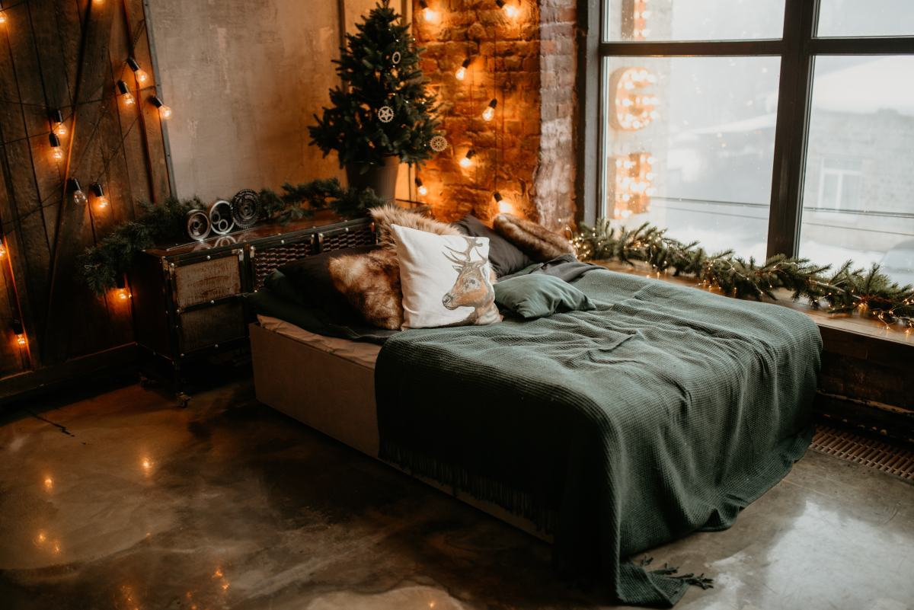
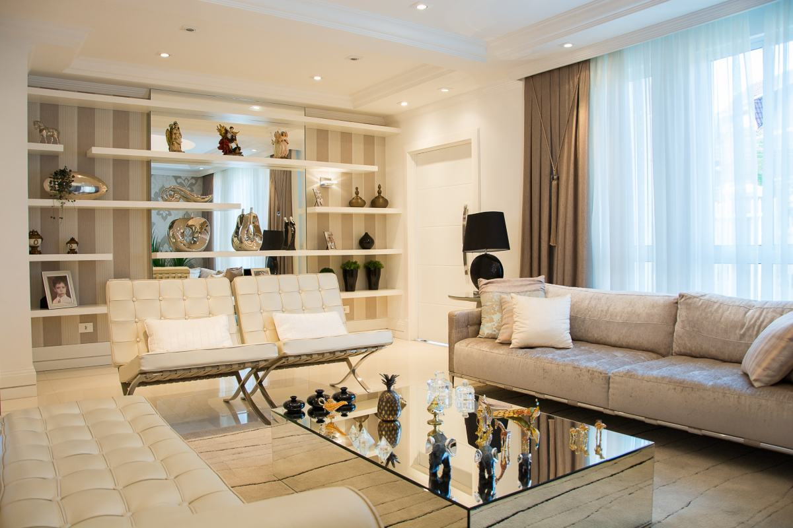

Pitrufquén · Región de La Araucanía
Mida el hueco
antes de enamorarse
del mueble.
El problema más caro de esta industria no es el precio ni el color: es un sofá que no pasa por la puerta. Pasa todas las semanas, en todas las mueblerías del país, y se evita con cinco medidas que caben en un papel.
01 — La pieza de esta página
Las cinco medidas
que hay que traer.
Ninguna necesita herramientas raras: una huincha y dos minutos. Con estas cinco anotadas, la compra se decide en el local y no se devuelve al día siguiente, que es lo que le conviene al cliente y también a la mueblería.
-
01
El hueco donde va
Ancho, fondo y alto del lugar exacto. Y deje diez centímetros de más: un mueble metido a presión se ve metido a presión, y además no deja abrir las puertas ni pasar por el lado.
-
02
La puerta más angosta del camino
La medida que se olvida siempre, y la única que no tiene arreglo. No es la puerta de la pieza: es la más angosta de TODO el recorrido, desde la calle hasta el lugar. Un sofá que no pasa no se achica.
-
03
El pasillo y el giro
Un mueble largo necesita espacio para girar, no sólo para avanzar. Los pasillos angostos y las escaleras con vuelta son donde se quedan pegados los roperos. Si hay escalera, mida también la altura libre del techo en el descanso.
-
04
Lo que hay en la pared
Enchufes, interruptores, la salida del cable, el radiador, el marco de la ventana. Un mueble que tapa el único enchufe del living es un problema para siempre, y se ve recién cuando ya está puesto.
-
05
La altura hasta la ventana
Si el mueble va bajo una ventana, la medida que manda es del suelo al marco, no del suelo al techo. Y si va bajo una repisa o un mueble alto, lo mismo: la altura libre es la que decide.
Esto es conocimiento general del oficio, escrito por mí, y sirve igual para cualquier mueblería del país. No describe el catálogo de Muebles Río Toltén: qué vende, en qué medidas y con qué plazos lo completa el negocio antes de publicar. Tampoco hay ni un precio en toda la página, por la misma razón.

Nadie compra un mueble.
Compra que la pieza quede como se la imaginó.

Por acá empieza todo
Una pieza vacía y una huincha.
02 — Dos maneras de comprar
A medida o de línea.
Las dos están bien y sirven para cosas distintas. Lo que sale caro es elegir la equivocada — mandar a hacer algo que existía hecho, o forzar un mueble estándar en un espacio que no lo admite.
De línea
- Se ve antes de comprarlo. Está ahí, se toca, se abre el cajón, se mide con la huincha en la mano.
- Se lleva el mismo día, si hay stock.
- Cuesta menos, porque está hecho en serie.
- El límite: viene en las medidas que viene. Si el hueco es raro, no hay vuelta.
A medida
- Cabe donde tiene que caber. Es toda la ventaja, y en casas antiguas —que en Pitrufquén son muchas— suele ser la única salida.
- Se elige la madera y la terminación.
- Toma tiempo, y ese plazo hay que preguntarlo antes, no después.
- El límite: lo que se aprueba es lo que llega. Conviene ver un dibujo con medidas antes de que empiecen a cortar.
Cuál de las dos ofrece este negocio, con qué plazos y si hace diseño previo, lo dice Muebles Río Toltén. Esta sección explica la diferencia, no promete un servicio.

03 — Lo que se busca por internet
Una mueblería
vende con fotos.
Es el único rubro de esta tanda donde el catálogo ES el negocio. Nadie llama para preguntar «¿tienen comedores?»: quiere ver cuáles, de qué color y de qué porte, y recién ahí decide si vale la pena ir hasta el local.
Y hay algo más que una página resuelve y una ficha de Google no: el que está armando una casa mira de noche, guarda el link y lo manda al grupo familiar. Eso no pasa con un teléfono suelto.
- Living y comedor
- Dormitorio — camas, veladores, cómodas, roperos
- Cocina — muebles altos y bajos, mesones
- Closets y muebles de baño
- Muebles a medida
- Colchones
Lista de ejemplo de las familias que suele tener una mueblería. Qué vende Río Toltén de verdad, si hay despacho y hasta dónde, lo completa el negocio: está armada y vacía a propósito.
04 — La casa por dentro
Madera, tela
y una pieza que llenar.



05 — Contacto
Preguntar por un mueble.
Si ya tiene las medidas anotadas, dígalo al llamar: con eso se sabe de inmediato si hay algo que sirva o si conviene mandarlo a hacer.
- Comuna
- Pitrufquén, Región de La Araucanía
- Dirección exacta
- falta — no está publicada
- Horario
- falta — hay que confirmarlo
- ¿Hace muebles a medida?
- falta — y con qué plazo
- ¿Hay despacho?
- falta — y hasta dónde
- ¿Suben el mueble?
- falta — y hasta qué piso
Las cinco líneas en cursiva son las que hay que llenar antes de publicar. «¿Hay despacho y hasta dónde?» es la que más ventas decide: un comedor no se lleva en la micro, y quien no ve esa respuesta no llama.